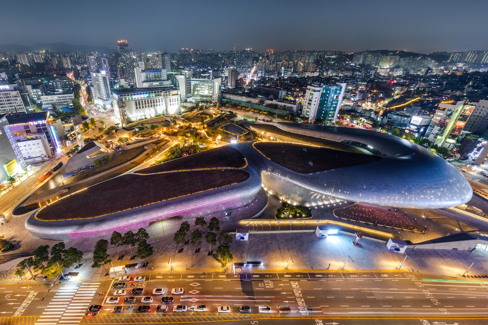
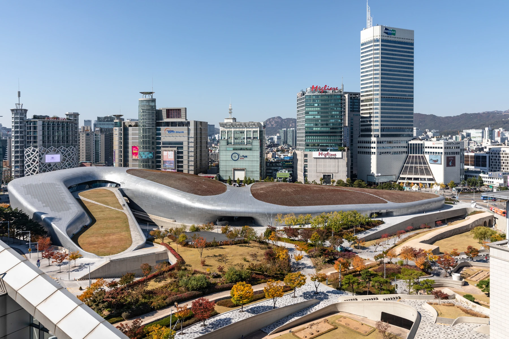
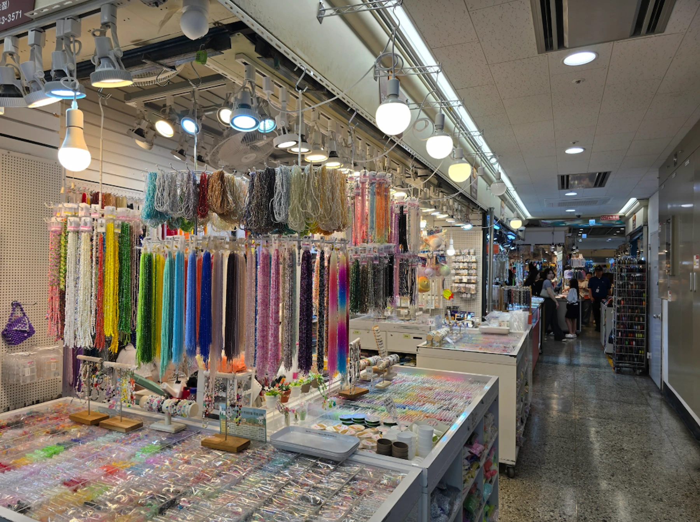
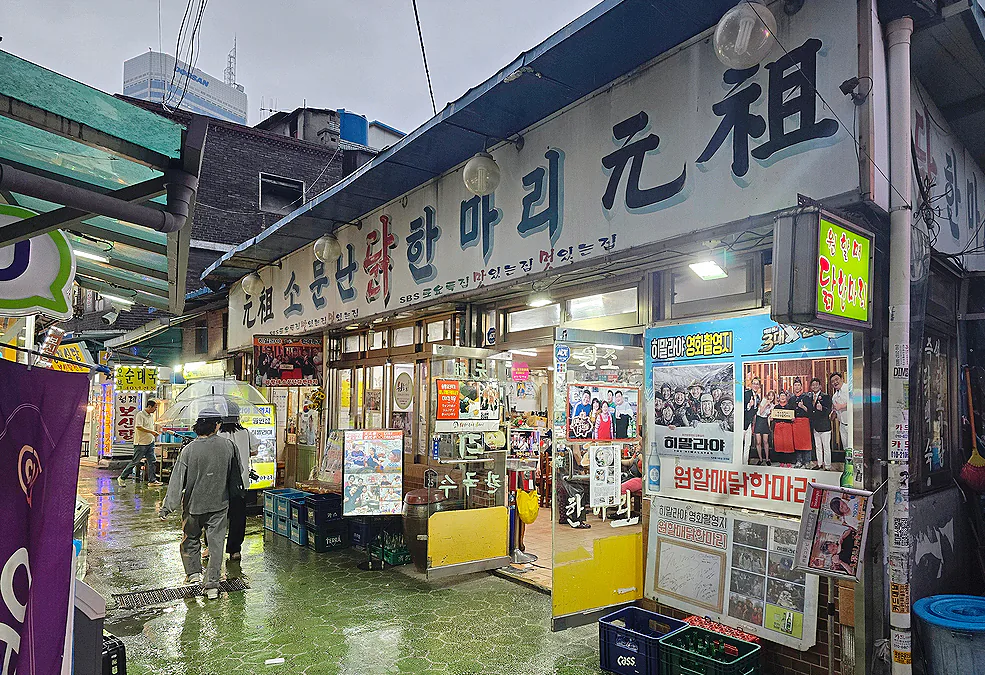
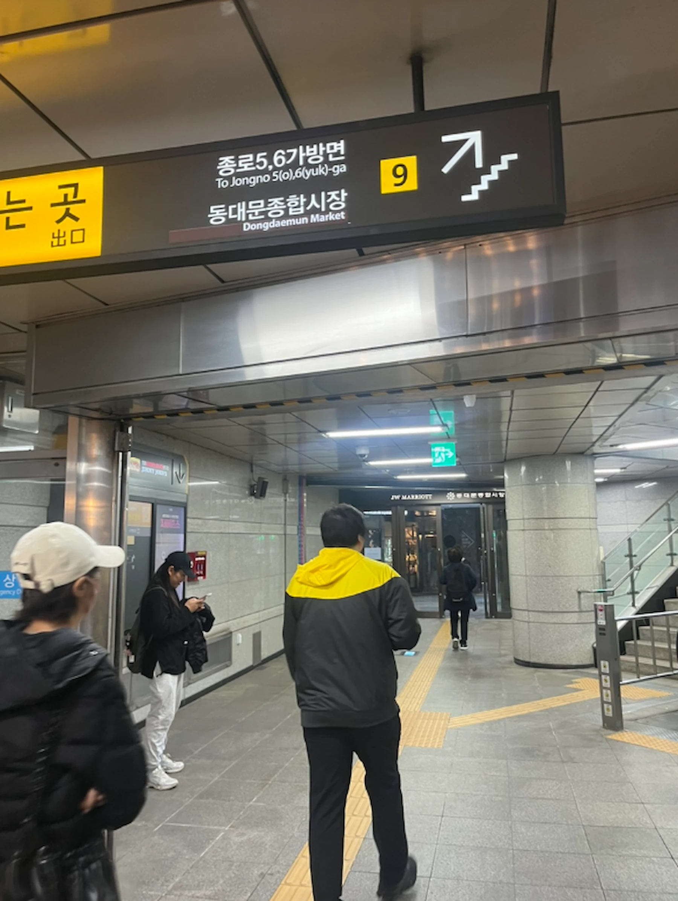

Guide de Dongdaemun à Séoul 2026: DDP, marchés et shopping nocturne
Dongdaemun n’est pas un seul marché.
DDP, centres commerciaux classiques, marchés de tissus et d’accessoires, boutiques ouvertes tard et commerces de mode en gros sont proches les uns des autres. Mais ils ne fonctionnent ni de la même manière, ni aux mêmes horaires.
Si c’est votre première visite et que vous cherchez surtout des vêtements, des sacs ou des accessoires, commencez du côté de DDP et des commerces de détail plutôt que d’entrer directement dans le quartier des grossistes.
Si vous cherchez du tissu, des perles, de la passementerie ou d’autres fournitures pour l’habillement, rapprochez-vous plutôt de la station Dongdaemun et du Dongdaemun Shopping Complex en journée.
Et si vous venez le soir, décidez d’abord du type de sortie qui vous intéresse. Les boutiques ouvertes tard, les grossistes de mode, le marché Yellow Tent et DDP de nuit offrent quatre expériences différentes.
À Dongdaemun, arriver au bon endroit mais à la mauvaise heure peut donner l’impression de s’être trompé de marché.

Comprendre Dongdaemun avant de partir
Pour comprendre Dongdaemun, le plus simple est de ne plus le considérer comme un seul et même quartier commerçant.
Voyez-le plutôt comme plusieurs quartiers qui se recoupent et présentent un intérêt à des moments différents.
La carte de cette page s’organise autour de six questions :
- Voulez-vous voir DDP ?
- Cherchez-vous des boutiques classiques pour vos achats personnels ?
- Cherchez-vous des tissus, des accessoires ou des fournitures de loisirs créatifs ?
- Voulez-vous faire du shopping tard le soir ?
- Le quartier des grossistes de mode vous intéresse-t-il vraiment ?
- Où vous arrêter pour un vrai repas ?
Une fois ces questions réglées, il est beaucoup plus facile de choisir la station, le trajet et l’heure.
Première visite à Dongdaemun ?
Commencez par les commerces de détail.
La station Dongdaemun History & Culture Park dessert DDP et le parcours le plus simple pour des achats courants. Rejoignez les marchés spécialisés une fois que vous savez ce que vous cherchez.
Le quartier des grossistes n’est pas le point de départ par défaut simplement parce que vous venez acheter des vêtements à Dongdaemun.
LIEU + ENVIE + HORAIRE
Une carte interactive pour choisir votre parcours
Choisissez une tranche horaire, une catégorie ou un itinéraire avant de partir à pied. La carte utilise le service officiel NAVER Maps Web Dynamic Map.
Chargement de la carte officielle NAVER…
Préparation des adresses officielles sur la carte…
Quelle partie de Dongdaemun vous intéresse vraiment ?
DDP et son architecture
Rendez-vous au Dongdaemun Design Plaza si l’architecture, les expositions, les événements de design ou le bâtiment éclairé la nuit font partie de vos envies.
DDP n’est pas seulement un bâtiment futuriste à photographier. Ce centre culturel accueille des expositions, des événements de design, des défilés de mode et une programmation qui évolue. Entrez si une exposition en cours vous attire. Sinon, son architecture et l’ambiance du soir peuvent tout de même en faire un bon point de départ pour découvrir Dongdaemun.
DDP permet aussi de se repérer facilement : il se trouve juste à côté de la station Dongdaemun History & Culture Park et de plusieurs commerces de détail faciles d’accès.
DDP est un point de repère, pas un autre nom pour Dongdaemun. Comme le quartier commerçant s’étend sur de nombreux marchés et centres commerciaux, les voyageurs l’utilisent souvent pour situer le secteur sud, avec ses commerces de détail et ses boutiques de mode nocturnes.
Ne pensez pas avoir vu le « marché de Dongdaemun » après une visite de DDP. Les marchés traditionnels et spécialisés s’étendent vers la station Dongdaemun, tandis que les grossistes de nuit suivent un autre rythme.
Ne confondez pas DDP avec DDP Fashion Mall. Ce dernier est un centre de vente en gros de mode, ouvert la nuit, qui occupe un bâtiment distinct du Dongdaemun Design Plaza.

Des commerces de détail faciles à aborder
Choisissez les commerces de détail si vous voulez acheter quelques articles sans apprendre les règles de l’achat en gros.
Doota Mall est l’un des points de départ les plus simples pour une première visite. Ce centre commercial classique propose mode, chaussures, sacs, cosmétiques, souvenirs, restauration et services de détaxe.
Hyundai City Outlet Dongdaemun est une autre option simple pour des achats au détail, notamment en début de soirée, car il ferme avant les principaux centres de vente en gros nocturne.
Si vous voulez simplement faire du shopping, rien ne vous oblige à entrer chez les grossistes pour pouvoir dire que vous avez fait des achats à Dongdaemun.
Tissus, accessoires et fournitures de loisirs créatifs
Choisissez le Dongdaemun Shopping Complex si vous venez chercher un produit précis.
C’est ici que vous trouverez tissus, fournitures pour l’habillement, perles, passementerie, accessoires, articles pour le mariage et autres produits spécialisés.
La différence essentielle tient aux horaires.
Il s’agit surtout de marchés de jour. Les horaires varient aussi selon les rayons : savoir que « Dongdaemun reste ouvert tard » ne vous aide pas si vous cherchez du tissu.
Si vous vous intéressez vraiment aux matières ou à la personnalisation, ce marché peut justifier une visite à lui seul. Si vous cherchez uniquement du prêt-à-porter, ce n’est généralement pas le meilleur premier arrêt.
Faire du shopping tard le soir
À Dongdaemun, les particuliers peuvent encore faire des achats tard dans la nuit.
NYUNYU Dongdaemun, par exemple, reste ouvert jusqu’au petit matin et vend vêtements, sacs, chaussures et accessoires aux particuliers.
Autrement dit, « après minuit » ne signifie pas forcément « réservé aux grossistes ».
Mais le choix se réduit à mesure que la nuit avance. Vérifiez donc les horaires actuels avant d’organiser toute votre visite autour de 1 h ou 2 h du matin.
Les grossistes de nuit
Le quartier des grossistes nocturnes constitue une autre facette de Dongdaemun.
Des centres comme DDP Fashion Mall et les centres de vente en gros du groupe apM ouvrent en soirée et poursuivent leur activité jusqu’au petit matin.
Il s’agit bien d’un secteur professionnel de la mode : acheteurs, vendeurs et grossistes travaillent alors qu’une grande partie de Séoul ralentit.
Ce fonctionnement peut être passionnant si vous vous intéressez à l’approvisionnement en mode ou au commerce de gros.
Pour un voyageur qui fait des achats personnels, ce n’est pas forcément mieux.
La vente à l’unité dépend du bâtiment et du vendeur. Certains centres de gros ferment aussi à des moments inattendus pour les visiteurs, notamment des nuits où l’on imagine le quartier particulièrement animé.
Allez-y pour une raison précise, pas simplement parce que les portes restent ouvertes tard.
Le « marché de Dongdaemun » n’est pas un seul marché
Cette question de nom explique une grande partie de la confusion.
L’expression « marché de Dongdaemun » désigne souvent un vaste quartier commerçant regroupant marchés traditionnels, marchés spécialisés, centres commerciaux modernes et immeubles de grossistes.
Dongdaemun Shopping Complex, en revanche, est un grand ensemble commercial bien précis situé près de la station Dongdaemun.
Ces deux sens ne sont pas interchangeables.
Si un blog vous conseille d’« aller au marché de Dongdaemun », il vous manque encore plusieurs informations :
- ce que vous voulez acheter
- si vous cherchez de la vente au détail ou en gros
- si le lieu fonctionne de jour ou de nuit
- quelle station vous dépose du bon côté du quartier
C’est pourquoi une carte vous aidera davantage ici qu’une nouvelle liste de dix centres commerciaux.
Arriver à la bonne station
Pour la plupart des visiteurs, Dongdaemun a deux portes d’entrée pratiques.
Station Dongdaemun History & Culture Park
Choisissez cette station pour :
- DDP
- les commerces de détail classiques
- les boutiques ouvertes tard
- rejoindre le quartier de la mode nocturne
Les lignes 2, 4 et 5 s’y croisent.
Pour une première visite consacrée à DDP, au shopping et à un dîner, c’est généralement le départ le plus simple.
Station Dongdaemun
Choisissez cette station pour :
- Dongdaemun Shopping Complex
- les tissus et fournitures pour l’habillement
- les marchés spécialisés
- les ruelles des restaurants de poisson grillé et de dak hanmari
Les lignes 1 et 4 s’y croisent.
C’est le meilleur point de départ si vous venez pour le marché lui-même, plutôt que pour DDP.
Les stations sont proches, mais ne desservent pas les mêmes besoins
Vous pouvez passer d’un secteur à l’autre à pied.
Aucune des deux stations n’est meilleure dans tous les cas. Choisir la bonne vous évite simplement d’arriver à l’autre bout d’un très grand quartier commerçant.
Première visite ? Commencez par la vente au détail avant les grossistes
Pour découvrir la mode coréenne, acheter quelques pièces et voir DDP, le parcours le plus facile à Dongdaemun est le suivant :
DDP → commerces de détail → dîner → shopping nocturne si vous en avez envie
Vous découvrez ainsi le quartier avant que l’activité des grossistes nocturnes ne prenne le relais.
Vous évitez aussi une erreur fréquente : entrer dans un immeuble rempli de vêtements en supposant que tous les vendeurs fonctionnent comme des boutiques classiques.
Les grossistes de Dongdaemun méritent une visite à part seulement si leur activité vous intéresse vraiment.
Si vous cherchez des tissus, des accessoires ou des fournitures créatives
Venez en journée.
Le secteur des marchés spécialisés commence autour du Dongdaemun Shopping Complex, où les différentes catégories de produits suivent des horaires distincts.

La carte devient particulièrement utile ici : même au bon endroit, il n’est pas toujours facile de savoir dans quel bâtiment ou à quel étage chercher le produit voulu.
Si vous achetez du tissu, prévoyez du temps pour comparer avant de repartir. Pour les perles, breloques, galons ou fournitures de personnalisation, vérifiez les horaires du rayon concerné, sans vous fier à l’idée générale que Dongdaemun reste ouvert tard.
Organisez la sortie autour du marché
Voici un parcours pratique :
Station Dongdaemun → Shopping Complex → déjeuner → DDP si vous souhaitez prolonger
N’inversez pas la journée simplement parce que DDP est le monument le plus connu.
Si vous venez pour les fournitures, commencez par le marché de jour.
Ce que désigne vraiment le « marché de nuit de Dongdaemun »
Une recherche sur le « marché de nuit de Dongdaemun » renvoie à plusieurs expériences différentes regroupées sous le même nom.
Il faut pourtant les distinguer.
Yellow Tent / Sebit Market
Il existe bien un marché de rue nocturne dans le secteur de Dongdaemun, souvent appelé Sebit Market ou Yellow Tent Market.
Il est aussi connu pour ses contrefaçons et les autorités locales y poursuivent leurs contrôles.
Vous le croiserez peut-être lors d’une sortie nocturne à Dongdaemun, mais Korea Inside ne recommande pas l’achat de produits contrefaits.
Si vous cherchez un marché de nuit asiatique surtout consacré à la nourriture, ce n’est pas une bonne raison de préférer Dongdaemun à un lieu dédié à la cuisine.
Faire du shopping tard le soir
C’est la formule qui convient à de nombreux voyageurs.
Certaines boutiques classiques restent ouvertes bien plus tard que dans les quartiers commerçants habituels. Vous pouvez y acheter vêtements, accessoires et autres articles sans entrer dans le circuit des grossistes.
Choisissez cette option si vous voulez faire des achats tard sans être acheteur professionnel de mode.
La mode en gros à la nuit tombée
Vers 20 h, les principaux centres de gros commencent à ouvrir et le quartier change de visage.
Ce n’est pas un spectacle pour touristes, mais une partie de l’industrie de la mode en activité.
Venez si c’est cette activité qui vous intéresse.
Ne restez pas jusqu’à 3 h ou 4 h du matin simplement parce qu’un guide affirme que Dongdaemun « ne dort jamais ».
DDP de nuit
DDP constitue une autre raison, distincte, de venir dans le quartier le soir.
L’architecture, les éclairages et la programmation événementielle ou multimédia peuvent suffire à rendre la soirée intéressante, même sans aucun achat chez les grossistes.
Consultez le programme de DDP pour votre date au lieu de supposer qu’un spectacle lumineux ou un événement particulier est permanent.
À quel moment visiter Dongdaemun ?
Il n’y a pas une seule heure idéale.
En journée
À privilégier pour :
- les tissus
- les fournitures de couture et d’habillement
- les accessoires et fournitures de loisirs créatifs
- les marchés spécialisés
- les expositions de DDP
- déjeuner près des marchés traditionnels
De la fin d’après-midi au début de soirée
C’est le créneau à privilégier par défaut pour une première visite.
Vous pouvez :
- voir DDP
- faire des achats dans les centres commerciaux classiques
- dîner
- voir l’activité nocturne démarrer
- décider si vous avez vraiment envie de poursuivre le shopping
Pour beaucoup de voyageurs, le créneau d’environ 16 h à 22 h offre le meilleur équilibre.
Après 22 h
Les possibilités d’achat au détail se réduisent tandis que les grossistes s’animent davantage.
Ce créneau peut convenir si le shopping nocturne fait réellement partie de votre programme.
Après minuit
Venez pour une raison précise.
Certaines boutiques restent ouvertes aux particuliers et les grossistes continuent leur activité, mais le quartier accueille de plus en plus des personnes venues travailler ou acheter pour le commerce de la mode.
Inutile de rester jusqu’à l’aube pour considérer que vous avez « fait » Dongdaemun.
Vente au détail ou en gros : distinguez vos besoins
La différence la plus simple est la suivante :
Au détail : vous achetez pour vous-même.
En gros : vous achetez dans un environnement professionnel où vendeurs et acheteurs approvisionnent d’autres entreprises.
Cela ne signifie pas que tous les grossistes refusent de vendre un seul article.
Cela signifie qu’il ne faut pas s’attendre au fonctionnement d’une boutique classique.
Un centre de vente en gros peut imposer ou présenter :
- des quantités minimales
- des règles de vente à l’unité qui varient selon le vendeur
- une forte place des paiements en espèces
- un rythme de travail plus rapide
- une autre manière d’accueillir les personnes qui regardent sans acheter
- des horaires conçus pour les professionnels de la mode plutôt que pour les touristes
Pour une première visite, si vous cherchez une veste ou quelques accessoires, les commerces de détail constituent généralement le point de départ le plus simple.
Si vous voulez comprendre comment les professionnels s’approvisionnent en mode coréenne, les grossistes de nuit sont l’une des facettes les plus singulières de Dongdaemun.
Manger à Dongdaemun, sans forcément aller au marché Gwangjang
Le marché Gwangjang est célèbre pour sa cuisine, mais cela ne veut pas dire qu’il n’y a rien d’intéressant à manger à Dongdaemun.
La différence tient à la façon d’organiser la sortie.
Gwangjang peut être une destination gourmande à part entière.
À Dongdaemun, l’enchaînement le plus naturel est plutôt :
marché ou shopping → un vrai repas → la suite de la soirée
La ruelle du poisson grillé
La ruelle des restaurants de poisson grillé, près de la station Dongdaemun, est particulièrement pratique à l’heure du déjeuner.
On ne vient pas ici goûter dix petits encas à la suite, mais s’asseoir pour un repas simple après une visite des marchés de jour.
Le déjeuner peut être animé et les horaires varient d’un restaurant à l’autre.
La ruelle du dak hanmari
Le dak hanmari est l’un des repas les plus faciles à intégrer à un après-midi ou à une soirée à Dongdaemun.
Le repas s’articule autour d’un poulet entier cuit à table, auquel on ajoute souvent des nouilles ensuite.
Il convient particulièrement bien après le shopping : cette ruelle reste une option pour dîner plus tard, alors que le poisson grillé se prête davantage au déjeuner.
Si vous voyagez seul, vérifiez la taille des portions avant de commander un poulet entier.

Inutile de tout combiner
Vous n’avez pas besoin de prévoir poisson grillé, dak hanmari et marché Gwangjang dans la même sortie.
Choisissez le repas qui s’intègre au parcours déjà prévu.
Trois itinéraires pratiques à Dongdaemun
Itinéraire 1 — Première visite : DDP, shopping et dîner
À privilégier pour : la plupart des visiteurs qui découvrent le quartier
Commencez à la Station Dongdaemun History & Culture Park.
Allez d’abord à DDP si l’architecture, une exposition ou le bâtiment lui-même vous intéresse.
Choisissez ensuite une ou deux étapes de shopping faciles, plutôt que d’essayer de faire tous les centres commerciaux.
Dînez, puis décidez si l’ambiance nocturne mérite de prolonger la sortie d’une heure ou deux.
Le parcours :
DDP → commerces de détail → dîner → boutiques ouvertes tard, si vous en avez envie
C’est le parcours recommandé par défaut par Korea Inside.
Itinéraire 2 — Tissus, fournitures et repas près du marché
À privilégier pour : les tissus, perles, accessoires, la personnalisation, les loisirs créatifs et les achats spécialisés
Commencez à la Station Dongdaemun et visitez le Shopping Complex pendant que les rayons qui vous intéressent sont encore ouverts.
Choisissez ensuite du poisson grillé pour déjeuner, ou un dak hanmari si vous préférez manger plus tard et plus copieusement.
Poursuivez vers DDP seulement si vous en avez encore l’énergie et l’envie.
Le parcours :
Shopping Complex → ruelle des restaurants → DDP / commerces de détail
Le marché vient en premier, parce qu’il ferme en premier.
Itinéraire 3 — Mode nocturne et grossistes
À privilégier pour : les sorties tardives à Séoul, l’approvisionnement en mode et la découverte du commerce de gros
Commencez par un dîner ou par DDP.
Rejoignez les boutiques ouvertes tard au fil de la soirée, puis le quartier des grossistes lorsque les bâtiments commencent à ouvrir.
Le parcours :
DDP / dîner → boutiques ouvertes tard → grossistes de nuit
Ne partez pas du principe que le vendredi ou le samedi est forcément le meilleur soir. Les fermetures de certains grands bâtiments peuvent rendre une partie du cœur du quartier des grossistes peu intéressante ces nuits-là.
Si vous venez pour acheter en gros, revérifiez le bâtiment précis avant de partir.
Combien de temps prévoir à Dongdaemun ?
2–3 heures
Cela suffit si :
- DDP est votre objectif principal
- vous voulez faire une seule étape de shopping
- vous avez un achat spécialisé précis à effectuer
4–6 heures
C’est la durée la plus adaptée pour une première visite.
Vous aurez le temps de prévoir :
- DDP
- des achats au détail
- un vrai repas
- un premier aperçu de Dongdaemun à la nuit tombée
3–4 heures pour les achats spécialisés
Une visite ciblée du Dongdaemun Shopping Complex suivie d’un déjeuner peut facilement occuper ce créneau.
De 20 h à minuit
Un bon créneau si vous venez précisément découvrir le fonctionnement du shopping nocturne.
Une journée entière
Ne consacrez une journée entière à Dongdaemun que si plusieurs de ses facettes vous intéressent réellement.
Une journée entière est excessive si vous voulez seulement voir DDP et faire quelques achats.
Faut-il une visite guidée de Dongdaemun ?
Pas pour faire des achats dans les commerces de détail classiques.
La carte de Korea Inside vise justement à rendre le quartier suffisamment clair pour qu’un voyageur le découvrant puisse suivre le parcours de base seul.
Un guide devient plus utile si vous cherchez :
- à accéder aux marchés de gros et à en comprendre le fonctionnement
- de l’aide pour communiquer avec les vendeurs
- à vous approvisionner en articles de mode
- à faire des achats spécialisés très tôt ou très tard
- une présentation organisée de plusieurs types de marchés
Ce sont des raisons bien plus solides de payer un guide que le simple trajet entre DDP et un centre commercial classique.
Une option de visite guidée à Dongdaemun
Avant de réserver, vérifiez le parcours, la langue, l’heure de départ, l’orientation vers la vente au détail ou en gros et l’aide exactement comprise.
Vous continuez le shopping tard ? Une pause peut être utile
Dongdaemun est l’un des rares quartiers de Séoul où le shopping peut réellement se poursuivre longtemps après que d’autres secteurs se sont calmés.
Votre énergie, elle, ne suit pas forcément.
Si vous aviez déjà envie de découvrir un jjimjilbang ou un spa en Corée, une adresse à Dongdaemun peut s’intégrer à la soirée après vos achats.
N’en ajoutez pas une à votre programme uniquement parce qu’elle est à proximité.
Une option pour se reposer tard le soir
Avant de payer, revérifiez la date choisie, les conditions concernant les bagages, la période d’admission et les modalités d’utilisation du billet.
À qui Dongdaemun convient-il, et qui peut s’en passer ?
Un bon choix pour les amateurs de mode
Venez si le shopping fait partie du voyage, surtout si vous cherchez autre chose qu’une visite de grand magasin classique.
Un bon choix pour les tissus, les accessoires et les loisirs créatifs
Les marchés spécialisés peuvent justifier le déplacement à eux seuls.
Vous profiterez davantage du quartier en sachant quel type de produit vous cherchez.
Un bon choix pour le design et DDP
DDP donne une vraie raison de visiter Dongdaemun, même si les achats en gros ne vous intéressent pas.
Un bon choix pour les couche-tard
Peu de quartiers commerçants de Séoul changent aussi radicalement à la nuit tombée.
Si cette transformation vous attire, Dongdaemun mérite une visite plus tardive.
Selon vos envies : une première visite à Séoul
Prévoyez Dongdaemun si DDP, la mode, le shopping ou un marché spécialisé vous intéresse.
Si vous n’avez que deux ou trois jours et qu’aucun de ces sujets ne vous attire particulièrement, vous pouvez consacrer ce temps à autre chose.
Selon votre programme : en famille
DDP, les commerces de détail classiques, les achats de jouets ou de papeterie et un repas assez tôt peuvent bien convenir.
Il est généralement inutile d’inclure les grossistes au cœur de la nuit dans un programme familial.
Selon vos besoins : en solo
Le quartier se visite facilement seul une fois que vous avez compris la carte.
La taille des portions et la communication avec les grossistes peuvent demander un peu plus de préparation.
Évitez les grossistes si vous cherchez simplement des boutiques classiques
Être encore debout à minuit n’est pas une raison d’entrer dans un centre de vente en gros.
Si vous cherchez seulement quelques vêtements ou accessoires, restez du côté des commerces de détail et terminez la sortie une fois vos achats faits.
Faut-il dormir à Dongdaemun ou simplement le visiter ?
Pour la plupart des voyageurs, une visite suffit.
Y loger devient plus intéressant si :
- vous prévoyez de faire du shopping tard plusieurs soirs
- l’approvisionnement en mode ou les achats en gros font partie du voyage
- un événement à DDP ou vos rendez-vous professionnels vous y ramènent régulièrement
- vous appréciez les transports autour de la station Dongdaemun History & Culture Park
- la simplicité des retours tardifs compte davantage que la proximité des grands sites historiques de Séoul
Ne choisissez pas un hôtel uniquement parce que son nom contient « Dongdaemun ».
La station réellement utilisée, la sortie, la marche finale, le trajet avec les bagages et la position par rapport à DDP ou aux marchés comptent davantage que le nom.
Vous cherchez encore où loger à Séoul ?
Choisissez d’abord le quartier, puis l’hôtel.
Se déplacer sans perdre le fil
Dongdaemun se parcourt à pied, mais le quartier est assez vaste pour qu’une mauvaise direction fasse vite perdre du temps.
Servez-vous de la carte plutôt que de traiter chaque nom de marché comme une destination distincte.

Utilisez la carte de transport dont vous avez déjà besoin ailleurs
Dongdaemun History & Culture Park et Dongdaemun sont deux grandes stations de métro. Une carte de transport est donc le moyen le plus simple d’entrer dans le quartier et d’en repartir.
Guide associé : Guide de T-money
Les moyens de paiement varient selon le type de commerce
Dans les centres commerciaux classiques, payer par carte est généralement simple.
Dans les marchés traditionnels et chez les grossistes, le fonctionnement peut être moins prévisible. Ne vous attendez pas à payer de la même façon partout.
Pour une visite spécialisée ou des achats en gros, prévoyez un moyen de paiement de secours et vérifiez les conditions du vendeur avant un achat important.
Guides associés : WOWPASS / les cartes de crédit étrangères en Corée
L’accès à l’aéroport concerne votre hébergement, pas votre visite du marché
Ne choisissez pas un hébergement à Dongdaemun uniquement parce qu’un trajet depuis l’aéroport semble pratique sur la carte.
Vérifiez tout le trajet entre l’hôtel et l’aéroport, y compris les bagages et la marche finale.
Guide associé : guide de l’aéroport / guide des hébergements
Les erreurs à éviter
Aller au « marché de Dongdaemun » sans savoir ce que vous cherchez
Le nom est trop large pour constituer à lui seul une destination précise.
Choisissez d’abord le type d’achats qui vous intéresse.
Arriver au bon bâtiment à la mauvaise heure
C’est l’une des façons les plus courantes d’avoir l’impression de s’être trompé de marché.
Vérifiez les horaires actuels avant de partir.
Penser que les nuits du week-end sont les meilleures pour les grossistes
Certains grands centres de vente en gros ferment le vendredi ou le samedi.
Vérifiez toujours le bâtiment précis.
Prendre tous les immeubles de vêtements pour des commerces de détail
Un bâtiment rempli de vêtements peut tout à fait être consacré à la vente en gros.
Ne supposez pas que l’achat à l’unité fonctionne partout de la même façon.
S’attendre à un seul marché nocturne surtout consacré à la cuisine
Dongdaemun de nuit est plus complexe que cela.
Le marché Yellow Tent, les boutiques ouvertes tard, les grossistes de mode et DDP de nuit sont des expériences distinctes.
Essayer de visiter tous les centres commerciaux
L’objectif n’est pas de cocher tout Dongdaemun.
Choisissez le secteur qui correspond à ce que vous cherchez réellement.
Rester jusqu’à l’aube parce que les marchés restent ouverts
Qu’un immeuble de grossistes soit ouvert jusqu’au petit matin ne signifie pas qu’un voyageur venu faire des achats personnels profite davantage de sa visite en restant jusqu’à la fermeture.
Avant de partir
Dongdaemun évolue davantage que beaucoup d’autres quartiers de Séoul : les horaires, les jours de fermeture des grossistes, les boutiques et la programmation de DDP comptent tous.
Avant de quitter votre hôtel, revérifiez :
- le marché ou le centre commercial précis
- les horaires du jour
- le jour de fermeture hebdomadaire
- le calendrier des expositions ou événements de DDP, si nécessaire
- si votre destination vend au détail ou en gros
- si le restaurant prévu est ouvert
- les disponibilités actuelles de la visite ou de l’activité réservée
Pour une sortie nocturne, vérifiez à nouveau le jour même.
Questions fréquentes sur Dongdaemun
Dongdaemun vaut-il la visite ?
Oui, si DDP, les achats de mode, les marchés de tissus et de fournitures ou le shopping nocturne font partie de vos envies à Séoul.
Si rien de tout cela ne vous attire et que votre premier séjour est très court, Dongdaemun n’est pas un passage obligé.
Le marché de Dongdaemun est-il un seul marché ?
Non.
Le nom désigne couramment un vaste quartier commerçant regroupant plusieurs marchés, centres commerciaux, secteurs spécialisés et immeubles de grossistes.
Le Dongdaemun Shopping Complex est un ensemble commercial précis au sein de ce quartier plus vaste.
Par où commencer lors d’une première visite ?
Pour DDP et les achats classiques, commencez près de la station Dongdaemun History & Culture Park.
Pour les tissus, les fournitures et les marchés spécialisés, commencez près de la station Dongdaemun et du Dongdaemun Shopping Complex.
Vaut-il mieux visiter Dongdaemun de jour ou de nuit ?
Tout dépend de ce que vous venez y faire.
Les marchés spécialisés se visitent surtout en journée. Les commerces de détail fonctionnent de la journée à la soirée. La vente en gros de mode devient beaucoup plus active la nuit.
Y a-t-il un marché de nuit à Dongdaemun ?
Oui, mais l’expression prête à confusion.
Le Yellow Tent / Sebit Market est bien un marché de rue nocturne. Les boutiques ouvertes tard, les grossistes de mode et DDP à la nuit tombée constituent d’autres facettes distinctes de la soirée à Dongdaemun.
Les touristes peuvent-ils acheter un seul article chez les grossistes de Dongdaemun ?
Parfois, mais ne le tenez pas pour acquis.
La vente à l’unité dépend du bâtiment et du vendeur. Choisissez les commerces de détail si vous voulez simplement acheter pour vous, sans les contraintes du commerce de gros.
Que manger à Dongdaemun ?
Le poisson grillé s’intègre bien à un parcours dans les marchés de jour. Le dak hanmari convient très bien au déjeuner, au dîner ou à un repas plus tardif.
À Dongdaemun, mieux vaut prévoir un vrai repas au fil de votre parcours que chercher à reproduire une tournée gourmande du marché Gwangjang.
Combien de temps passer à Dongdaemun ?
Pour une première visite, environ 4–6 heures suffisent généralement pour DDP, du shopping, un repas et un aperçu de l’ambiance du soir.
Une visite plus courte convient si vous venez pour un objectif précis.
Ai-je besoin d’une visite guidée ?
Pas pour faire des achats dans les commerces de détail classiques.
Un guide devient plus utile pour s’approvisionner chez les grossistes, communiquer avec les vendeurs ou découvrir des marchés spécialisés très tard ou très tôt.
Dongdaemun convient-il aux familles ?
Cela peut être le cas.
DDP, les commerces de détail faciles d’accès, les jouets ou la papeterie et un repas tôt sont des choix plus simples en famille que les grossistes au cœur de la nuit.
Faut-il loger à Dongdaemun ?
Logez-y si les achats tardifs, le commerce de la mode ou des visites répétées à DDP vont rythmer plusieurs journées du séjour.
Pour une seule visite, il n’est généralement pas nécessaire de changer d’hôtel afin de dormir à Dongdaemun.
Le parcours conseillé par Korea Inside
Pour une première visite :
Commencez à la station Dongdaemun History & Culture Park → découvrez DDP → faites vos achats dans les commerces de détail → prenez un vrai repas → prolongez seulement si le shopping nocturne vous intéresse vraiment.
Si vous venez surtout pour les tissus, les accessoires ou les fournitures créatives, inversez la logique :
Commencez à la station Dongdaemun en journée → visitez d’abord le marché spécialisé → mangez à proximité → rejoignez DDP ensuite.
Et si votre objectif est la mode en gros, prévoyez une sortie nocturne à part entière plutôt qu’un simple prolongement du shopping classique.
Notre recommandation
Mieux vaut comprendre Dongdaemun avant d’y arriver.
Le quartier n’est pas difficile à comprendre par manque d’informations. Il l’est parce que trop de marchés, de centres commerciaux et d’horaires différents sont réunis sous un même nom.
Ne commencez pas par enregistrer dix boutiques.
Commencez par quatre questions :
Que cherchez-vous ?
Dans quelle partie de Dongdaemun le trouverez-vous ?
À quels horaires ce secteur fonctionne-t-il vraiment ?
Quel parcours permet d’y aller sans revenir sur vos pas ?
Une fois ces points éclaircis, Dongdaemun cesse de ressembler à un labyrinthe et devient l’un des quartiers commerçants les plus singuliers de Séoul.